Masters 2017: Construyendo Argentina
Construyendo Argentina
La pregunta por el compromiso de cada uno reunió conversaciones sobre liderazgo, sectores productivos y políticas de Estado.
- Fecha
- 21 al 23 de abril de 2017
- Sede
- MIT · Harvard
Agenda
Construyendo Argentina,
¿cuál es el compromiso de cada uno?
KEYNOTE SPEAKER:
Argentina, ¿dónde estamos y hacia dónde vamos?

LOUSTEAU
Ex-Embajador argentino en Estados Unidos y referente de Energía Ciudadana Organizada (ECO)
PANEL 1:
Empresariado y desarrollo, ¿cuál es el rol y los desafíos?
GUTIERREZ
Presidente de YPF
MARTINEZ ÁLVAREZ
Director General de Tenaris Cono Sur
MARTINO
Presidente de HSBC Argentina
Federico EISNER
Managing Partner de Bain & Company, Argentina
PANEL 2:
Sectores económicos, ¿cómo alcanzar nuestro máximo potencial?
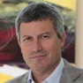
ELSZTAIN
Vicepresidente II de IRSA, CEO de Cresud y CEO de IRSA Commercial Properties
GROBOCOPATEL
Chairman del Grupo Los Grobo

RUBINSTEIN
CEO de OLX Latinoamérica
Gustavo NIEPONICE
Partner y Manager Director de The Boston Consulting Group, Argentina
EXPERIENCIAS DE LIDERAZGO:
¿Quiero ser líder?
COSTANTINI
Ex-Presidente de Aerolíneas Argentinas y General Motors
La odisea de liderar la animación en Argentina
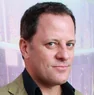
GORALI
Co-Fundador y Productor Ejecutivo de Mundoloco CGI Producto de Metegol
¿Cómo generar un equipo ganador?
VIGIL
Entrenador de Hockey, Coach Ontológico y Speaker Motivacional
PANEL 3:
Políticas de estado, ¿en qué estamos todos de acuerdo?
BOSSIO
Diputado Nacional por la Provincia de Buenos Aires (Partido Justicialista)
OCAÑA
Legisladora de la Ciudad Autónoma de Buenos Aires (Confianza Pública)
RECALDE
Diputado Nacional por la Pcia. de Buenos Aires (Presidente del Bloque Frente para la Victoria - PJ)
Francisco ORTEGA
Senior Partner y Manager Partner de McKinsey & Company, Argentina
KEYNOTE SPEAKER:
Los desafíos del desarrollo argentino
HAUSMANN
Director del Center for International Development (CID) y Profesor de Desarrollo Internacional en la Kennedy School of Government (HKS)
PANEL 4:
Construyendo Argentina, ¿cuál es el modelo?
ARROYO
Director del Banco Provincia y referente del Frente Renovador (FR)
IBARRA
Ministro de Modernización de la Nación
LEVY YEYATI
Decano de la Escuela de Gobierno de UTDT y Coordinador del Consejo Presidencial Argentina 2030
Ivan WERNING
Profesor del Departamento de Economía de MIT
Sponsors


Lugares
RECEPCIÓN
DE BIENVENIDA
Viernes 21 de abril
MIT Management Sloan School
30 Memorial Dr, Cambridge
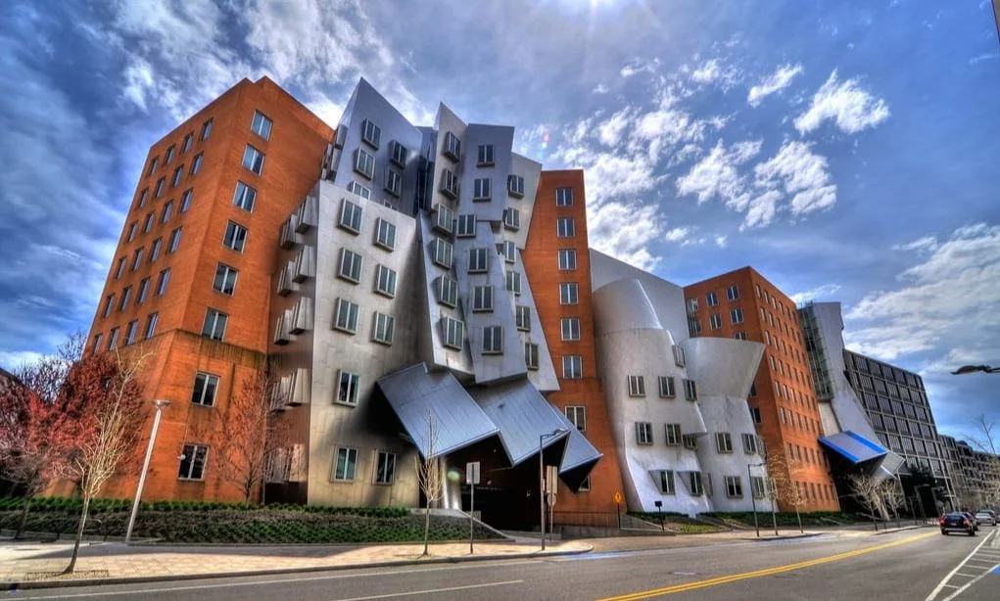
CONFERENCIA
Sábado 22 de abril
The Stata Center
Building 32, 32 Vassar St., Cambridge
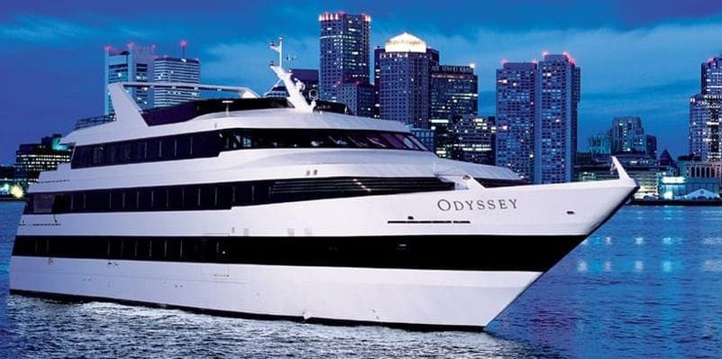
CENA
EN CRUCERO
Sábado 22 de abril
Odyssey Cruises Boston
200 Seaport Blvd, Boston
ASADO
DE DESPEDIDA
Domingo 23 de abril
Charles River
550 Memorial Dr, Cambridge
Equipo
EQUIPO
COORDINACIÓN GENERAL
DIFUSIÓN
SPONSORS
CONTENIDOS
OPERACIONES
DELEGADOS
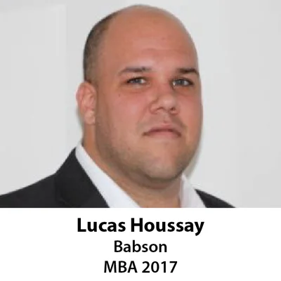
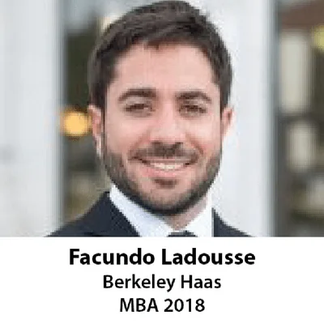
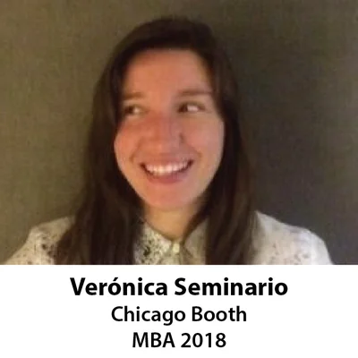
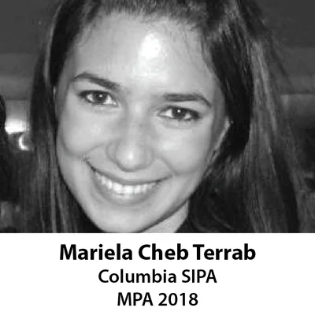
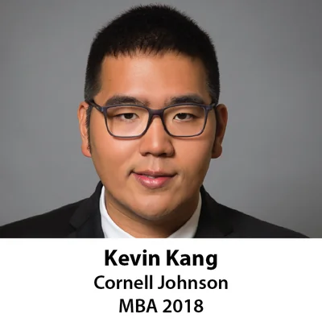
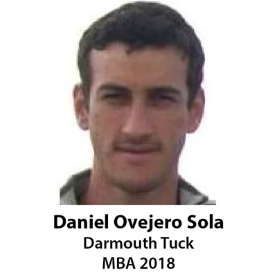
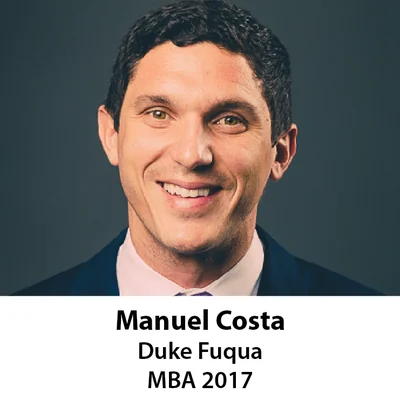
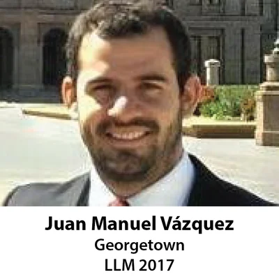
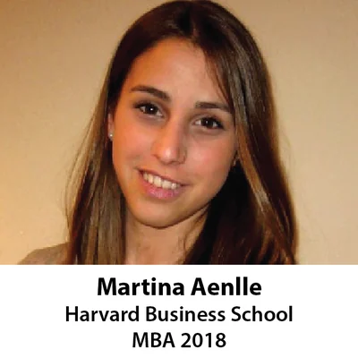
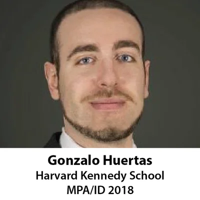
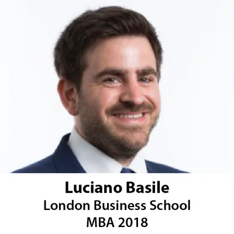
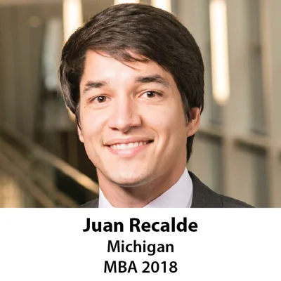
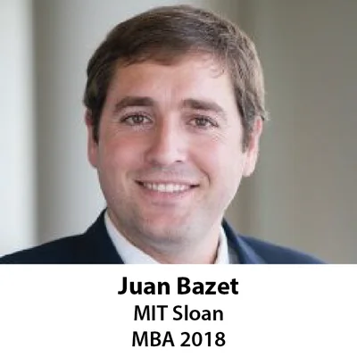
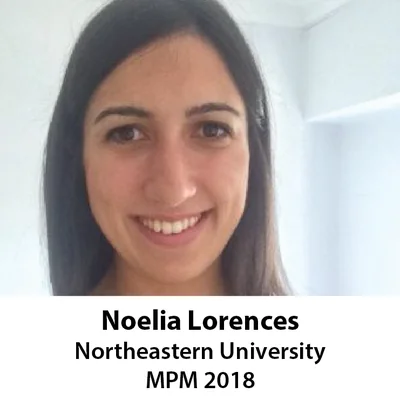
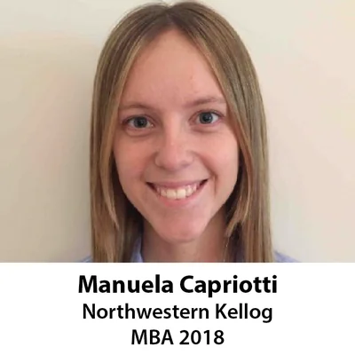
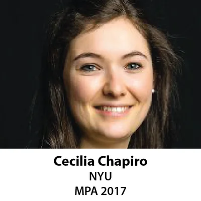
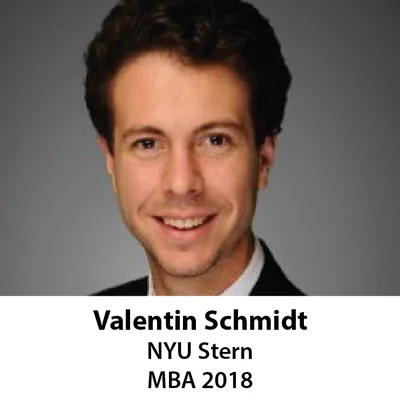
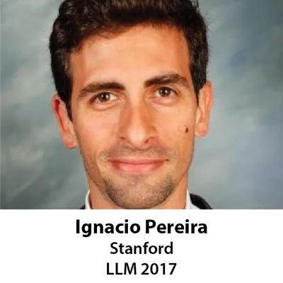
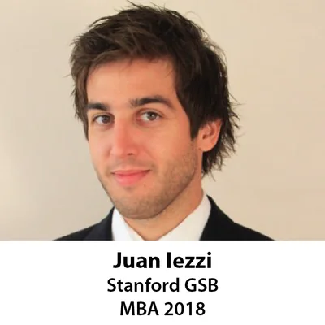
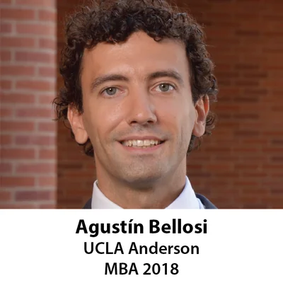
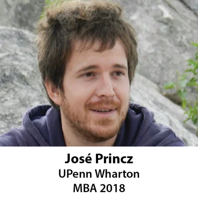